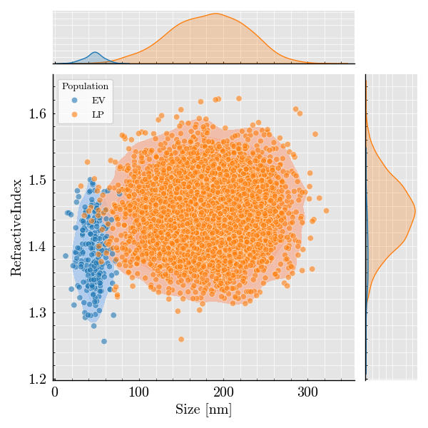
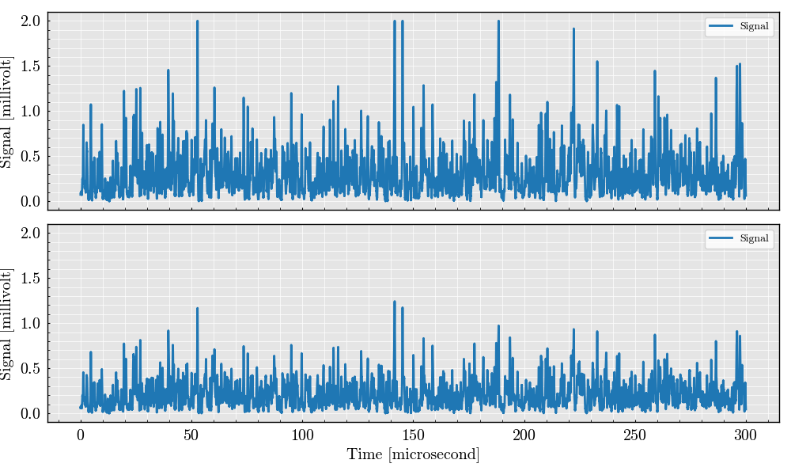
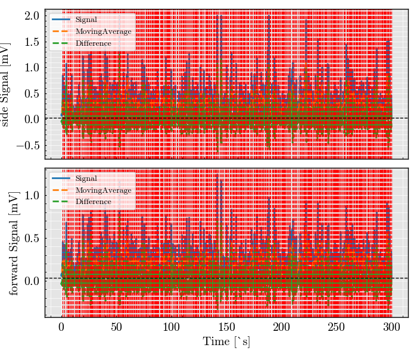
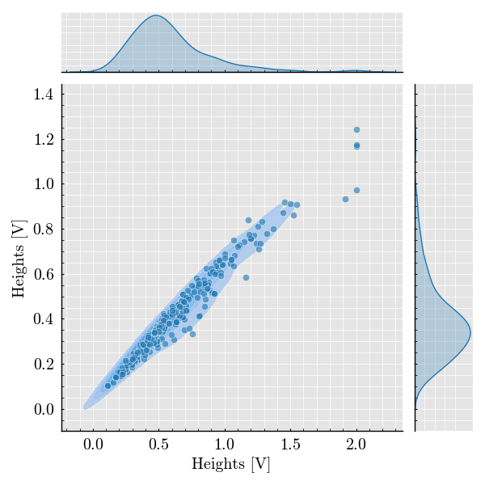

Note
Go to the end to download the full example code
Flow Cytometry Simulation [2 populations] Density Plot of Scattering Intensities#
This example simulates a flow cytometer experiment using the FlowCyPy library, analyzes pulse signals from two detectors, and generates a 2D density plot of the scattering intensities.
Steps: 1. Set flow parameters and particle size distributions. 2. Set up the laser source and detectors. 3. Simulate the flow cytometry experiment. 4. Analyze pulse signals and generate a 2D density plot.
# Import necessary libraries and modules
import numpy as np
from FlowCyPy import FlowCytometer, Scatterer, Analyzer, Detector, Source, FlowCell
from FlowCyPy import distribution
from FlowCyPy import peak_finder
from FlowCyPy.units import particle, milliliter, nanometer, RIU, second, micrometer, millisecond, meter
# Set random seed for reproducibility
np.random.seed(3)
# Step 1: Define Flow Parameters
flow_cell = FlowCell(
flow_speed=7.56 * meter / second, # Flow speed: 7.56 meters per second
flow_area=(10 * micrometer) ** 2, # Flow area: 10 x 10 micrometers
run_time=0.3 * millisecond # Total simulation time: 0.3 milliseconds
)
# Step 2: Create Populations (Extracellular Vesicles and Liposomes)
scatterer = Scatterer(medium_refractive_index=1.33 * RIU) # Medium refractive index: 1.33
# Add first population (Extracellular Vesicles)
scatterer.add_population(
name='EV', # Population name: Extracellular Vesicles (EV)
concentration=1e+9 * particle / milliliter, # Concentration: 1e9 particles per milliliter
size=distribution.RosinRammler(
characteristic_size=50 * nanometer, # Characteristic size: 50 nanometers
spread=4.5 # Spread factor for size distribution
),
refractive_index=distribution.Normal(
mean=1.39 * RIU, # Mean refractive index: 1.39
std_dev=0.05 * RIU # Standard deviation: 0.05 refractive index units
)
)
# Add second population (Liposomes)
scatterer.add_population(
name='LP', # Population name: Liposomes (LP)
concentration=2e+10 * particle / milliliter, # Concentration: 1e9 particles per milliliter
size=distribution.RosinRammler(
characteristic_size=200 * nanometer, # Characteristic size: 200 nanometers
spread=4.5 # Spread factor for size distribution
),
refractive_index=distribution.Normal(
mean=1.45 * RIU, # Mean refractive index: 1.45
std_dev=0.05 * RIU # Standard deviation: 0.05 refractive index units
)
)
# Initialize scatterer and link it to the flow cell
scatterer.initialize(flow_cell=flow_cell)
# Print and plot properties of the populations
scatterer.print_properties()
scatterer.plot()

Scatterer [] Properties
+-----------------------------+----------+
| Property | Value |
+=============================+==========+
| coupling factor | mie |
+-----------------------------+----------+
| medium refractive index | 1.3 RIU |
+-----------------------------+----------+
| minimum time between events | 974.6 fs |
+-----------------------------+----------+
| average time between events | 63.3 ns |
+-----------------------------+----------+
Population [EV] Properties
+------------------+------------------------------+
| Property | Value |
+==================+==============================+
| Name | EV |
+------------------+------------------------------+
| Refractive Index | Normal(1.390 RIU, 0.050 RIU) |
+------------------+------------------------------+
| Size | RR(50.000 nm, 4.500) |
+------------------+------------------------------+
| Concentration | 1.7 nmol/m³ |
+------------------+------------------------------+
| N events | 227.0 particle |
+------------------+------------------------------+
Population [LP] Properties
+------------------+------------------------------+
| Property | Value |
+==================+==============================+
| Name | LP |
+------------------+------------------------------+
| Refractive Index | Normal(1.450 RIU, 0.050 RIU) |
+------------------+------------------------------+
| Size | RR(200.000 nm, 4.500) |
+------------------+------------------------------+
| Concentration | 33.2 nmol/m³ |
+------------------+------------------------------+
| N events | 4.5 kparticle |
+------------------+------------------------------+
Step 4: Set up the Laser Source
from FlowCyPy.units import milliwatt, AU
source = Source(
numerical_aperture=0.3 * AU, # Numerical aperture of the laser: 0.3
wavelength=800 * nanometer, # Laser wavelength: 800 nanometers
optical_power=10 * milliwatt # Laser optical power: 10 milliwatts
)
source.print_properties() # Print the laser source properties
# Step 5: Configure Detectors
# Side scatter detector
from FlowCyPy.units import degree, watt, ampere, millivolt, ohm, kelvin, milliampere, megahertz
detector_0 = Detector(
name='side', # Detector name: Side scatter detector
phi_angle=90 * degree, # Angle: 90 degrees (Side Scatter)
numerical_aperture=1.2 * AU, # Numerical aperture: 1.2
responsitivity=1 * ampere / watt, # Responsitivity: 1 ampere per watt
sampling_freq=60 * megahertz, # Sampling frequency: 60 MHz
saturation_level=2 * millivolt, # Saturation level: 2 millivolts
n_bins='14bit', # Number of bins: 14-bit resolution
resistance=50 * ohm, # Detector resistance: 50 ohms
dark_current=0.1 * milliampere, # Dark current: 0.1 milliamps
temperature=300 * kelvin # Operating temperature: 300 Kelvin
)
# Forward scatter detector
detector_1 = Detector(
name='forward', # Detector name: Forward scatter detector
phi_angle=180 * degree, # Angle: 180 degrees (Forward Scatter)
numerical_aperture=1.2 * AU, # Numerical aperture: 1.2
responsitivity=1 * ampere / watt, # Responsitivity: 1 ampere per watt
sampling_freq=60 * megahertz, # Sampling frequency: 60 MHz
saturation_level=2 * millivolt, # Saturation level: 2 millivolts
n_bins='14bit', # Number of bins: 14-bit resolution
resistance=50 * ohm, # Detector resistance: 50 ohms
dark_current=0.1 * milliampere, # Dark current: 0.1 milliamps
temperature=300 * kelvin # Operating temperature: 300 Kelvin
)
detector_1.print_properties() # Print the properties of the forward scatter detector
# Step 6: Simulate Flow Cytometry Experiment
cytometer = FlowCytometer(
coupling_mechanism='mie', # Scattering mechanism: Mie scattering
source=source, # Laser source used in the experiment
scatterer=scatterer, # Populations used in the experiment
detectors=[detector_0, detector_1] # List of detectors: Side scatter and Forward scatter
)
# Run the simulation of pulse signals
cytometer.simulate_pulse()
# Plot the results from both detectors
cytometer.plot()

Source [] Properties
+------------+---------+
| Property | Value |
+============+=========+
+------------+---------+
Detector [forward] Properties
+--------------------+-----------+
| Property | Value |
+====================+===========+
| Sampling frequency | 60.0 MHz |
+--------------------+-----------+
| Phi angle | 180.0 deg |
+--------------------+-----------+
| Gamma angle | 0.0 deg |
+--------------------+-----------+
| Numerical aperture | 1.2 |
+--------------------+-----------+
| Responsitivity | 1.0 A/W |
+--------------------+-----------+
| Saturation Level | 2.0 mV |
+--------------------+-----------+
| Dark Current | 100.0 µA |
+--------------------+-----------+
| Resistance | 50.0 Ω |
+--------------------+-----------+
| Temperature | 300.0 K |
+--------------------+-----------+
| N Bins | 16384 |
+--------------------+-----------+
Step 7: Analyze Pulse Signals
from FlowCyPy.units import microsecond
algorithm = peak_finder.MovingAverage(
threshold=0.03 * millivolt, # Peak detection threshold: 0.03 millivolts
window_size=1 * microsecond, # Moving average window size: 1 microsecond
min_peak_distance=0.2 * microsecond # Minimum distance between peaks: 0.2 microseconds
)
analyzer = Analyzer(cytometer=cytometer, algorithm=algorithm)
# Run the pulse signal analysis without computing peak area
analyzer.run_analysis(compute_peak_area=False)
# Plot the analyzed pulse signals
analyzer.plot_peak()

Step 8: Extract and Plot Coincidence Data
analyzer.get_coincidence(margin=0.1 * microsecond) # Coincidence data with 0.1 µs margin
# Plot the 2D density plot of scattering intensities
analyzer.plot(log_plot=False) # Plot with a linear scale (log_plot=False)

Total running time of the script: (0 minutes 16.545 seconds)